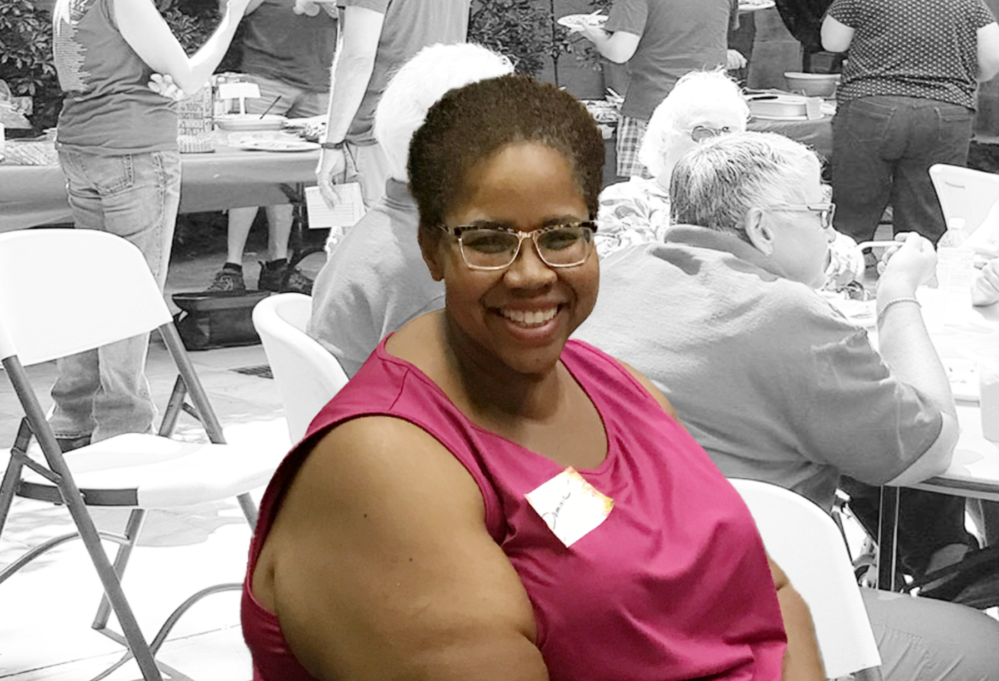

Skill Donation
I've been helping African American single moms with digital design for their small business practice. A lot of people need free service, but especially single moms who are African American. They have been going through so much harship, yet are an inspiration with all their accomplishment and the mark they are making in the world for their kids. I want to be a small supporting system they can relay on.
Read More